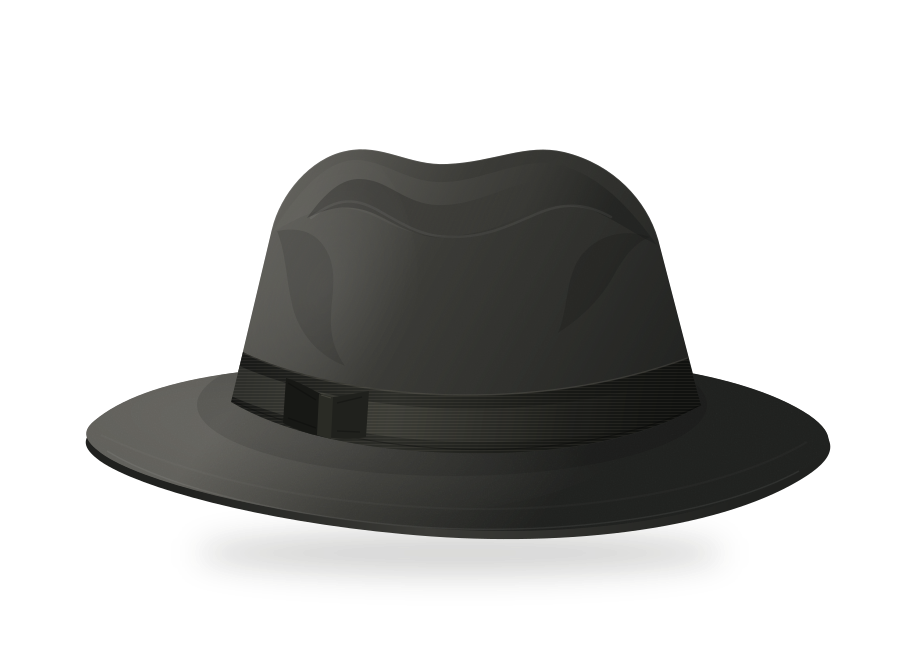

Шляпное дело — дело личное
Дело
в шляпе.
Сегодня — авантюрист. Завтра — поэт.
Выберите форму, смешайте цвета
и придумайте себя заново.
И ни одного неправильного сочетания.
Невозмутимый классик
Федора · Графит · День
Четыре способа быть собой
Знакомьтесь.
Ваши альтер эго.
Необязательно выбирать навсегда.
Начните с того, что нравится сегодня.
Планы на ничего и на всё
На случай,
если нет повода.
Три готовых настроения.
Нажмите на образ и сделайте его своим.
Оставьте себе на потом
Маленькая личная
коллекция.
Сохраняйте до восьми образов.
Они останутся в этом браузере.
Здесь будет ваша шляпная история.
Собрать первый образМаленький тест на настроение
Какой вы сегодня
персонаж?
Три вопроса — и шляпа под ваше сегодняшнее настроение. Завтра можно быть кем-то ещё.
Не психология. Просто повод примерить новое.Куда сегодня тянет?
ВАШ ОБРАЗ НА СЕГОДНЯ
Городской наблюдатель
Форма имеет значение
Шляпный словарь.
Четыре силуэта.
У каждого — свой почерк.
01ФедораСобранный характер
Продольная складка на тулье, защипы спереди и заметные поля. Лента подчёркивает переход от тульи к полям.
Примерьте сдержанный графит или добавьте терракоты.
02КовбойскаяСвободный маршрут
Высокая тулья и широкие поля с приподнятыми боками. Именно изгиб полей делает силуэт таким выразительным.
Песочный цвет — для спокойного образа. Винный — если хочется акцента.
03ПанамаЛёгкое отношение
В нашей коллекции — мягкий силуэт bucket: округлая тулья и короткие поля, направленные вниз. Лаконичная форма без острых углов.
Олива, кремовый или сливовый — выбирайте по настроению.
04ЦилиндрНемного театра
Высокая тулья с почти прямыми стенками, плоский верх и небольшие поля. Вертикаль здесь важнее всего — она задаёт весь образ.
Тёмно-синий добавит глубины. Кремовый поменяет привычный сценарий.
Если день не задался, задайте ему поля.